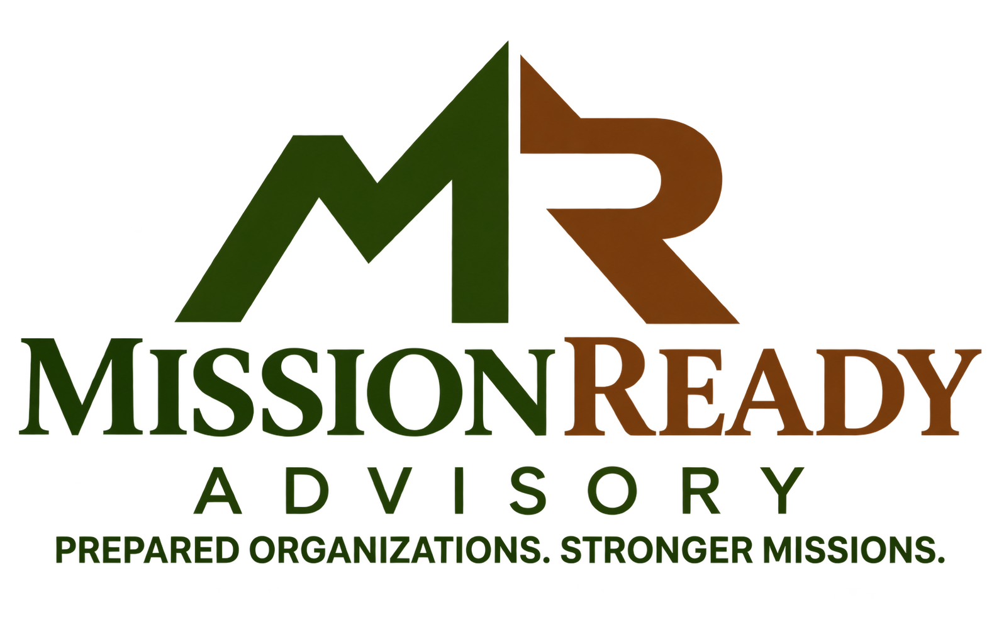

You know your organization. You know the people you serve. But when an audit is approaching, an accounting question gets complicated, or your internal processes aren’t working the way they should, sometimes you need someone who knows what the auditor is going to ask before they ask it.